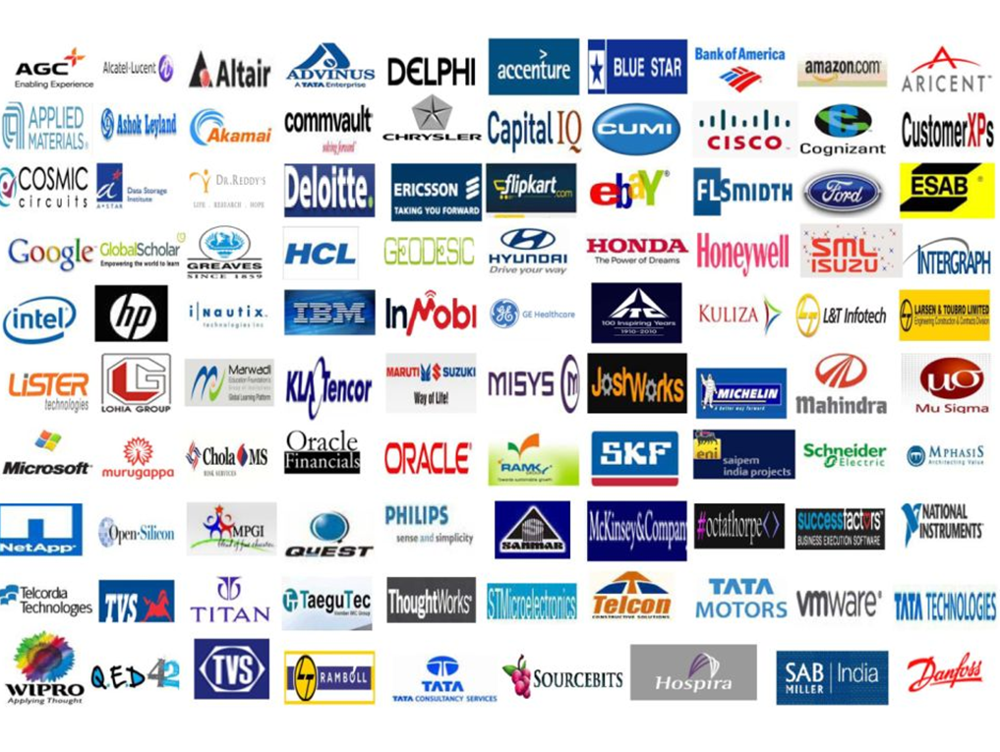

PAT Center
If VIT has placement records then it is because of PAT centre. Not only does this function as the working body to facilitate smooth working of the placement activities in the campus but also works to facilitate the training activities of the students and makes sure they get placed in the best of both national and international companies. This functions as the working body to facilitate smooth working of the placement activities in the campus.
Objectives
The key responsibilities of the PAT centre are listed below:
- To organize campus interviews for final year students with industries and business houses of repute from all over India.
- To prepare students to face campus interviews by arranging training in Aptitude tests, group discussions, preparing for Technical and HR interviews through professional trainers and VIT alumni.
- To promote career counseling by organizing guidance lectures by senior corporate personnel and most importantly by the immediately placed senior students.
- To organize campus interviews for final year students with industries and business houses of repute from all over India.
- To prepare students to face campus interviews by arranging training in Aptitude tests, group discussions, preparing for Technical and HR interviews through professional trainers and VIT alumni.
- To promote career counseling by organizing guidance lectures by senior corporate personnel and most importantly by the immediately placed senior students.
Placements in VIT
VIT University has been consistently setting records of campus placements amongst private institutions in India. Producing graduates who are well equipped to handle the working norms of the industry and commerce in the public and the private sectors has been the primary aim of the university.
We have over 400 recruiters from Core Engineering (Honeywell, ITC, National Instruments, Maruti, Cadence, Schneider Electric, Caterpillar, Ericsson R & D, ITC ABD, JP Morgan, Danfoss, HP R & D, Honeywell UOP, Tata Motors, ESAB, Ingersoll Rand, Derrick Petroleum, Dr.Reddy's Lab, Honda2Wheelers, SAB Miller, CEAT, Godrej, Boyce Chrysler, Johnson Controls, SKF, Agilent Technologies, Saint Gobain etc.,) and Software companies (Intel, Netapp, VM Ware, Alcatel Lucent, Broadcom, Trimble, Flipkart, eBay, Deshaw, Cisco, Deloitte, Commvault, Microsoft PPO, Zoho Corporation, S&P Capital IQ, Google, Joshworkz, Latentview, Mahindra Comviva, Codingmart, Vembu Technologies, Ingersoll Rand, Applied Materials, InMobi, AIG, Sapient, Belzabar, Codebramha, Customer XPs, Knolskape, Multicoreware, Success Factors, Blisstering Solutions, Wisemoo, Dell, Schlumberger, Teradata, Nucleus Software, Informatica, SAP India, Trident, Oracle, Bank of America, CA Technologies, Homeshop18, Mckinsey, Metric Stream, IMS Health, Interview Street, Ericsson Generic, Robert Bosch, Via.com, Bally Technologies, Yodlee etc.,) who visit each year
Get the VIT advantage!
- Visit of Top IT Services Companies
- Super Dream Offers
- Visit of Top IT product companies
- Internships
- Visit of Top Core Engineering Companies
- Training
- Dream Offers
Accreditation
We are honoured to be recognised as an A-grade institution by Tata Consultancy Services (TCS).
VIT is also accredited by Ericsson, TCS and Wipro Technologies.
Placement Process
- PAT Registration
- Training
- Eligibility Criteria
- 60% in X, XII, UG and PG as applicable
- No Current Arrears/ No History of arrears
- Academic gap